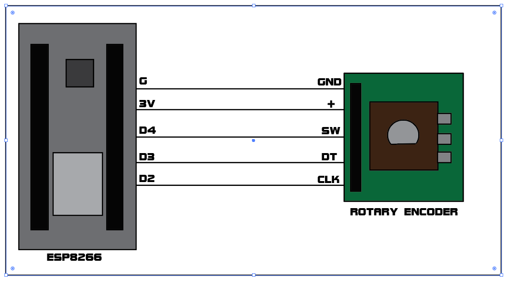

This project demonstrates how a robotic head can be controlled using a rotary encoder with ESP8266. The movement is reflected in real-time on a web interface.

#include <ESP8266WiFi.h> #include <ESP8266WebServer.h> #define CLK D2 #define DT D3 // risky pin (handled safely) #define SW D4 ESP8266WebServer server(80); volatile int position = 0; int lastCLK; // WiFi const char* ssid = "Robot_Head"; const char* password = "12345678"; // 🌐 Webpage String webpage = R"rawliteral( <!DOCTYPE html> <html> <head> <meta name="viewport" content="width=device-width, initial-scale=1"> <style> body { margin: 0; background: radial-gradient(circle, #0f2027, #203a43, #2c5364); text-align: center; color: white; font-family: Arial; perspective: 800px; } #robot { width: 200px; height: 200px; margin: 80px auto; transform-style: preserve-3d; } #head { width: 100%; height: 100%; background: #222; border-radius: 25px; border: 4px solid cyan; position: relative; } .eye { width: 35px; height: 35px; background: cyan; border-radius: 50%; position: absolute; top: 55px; } #eye1 { left: 35px; } #eye2 { right: 35px; } #mouth { width: 70px; height: 8px; background: cyan; position: absolute; bottom: 35px; left: 50%; transform: translateX(-50%); } </style> </head> <body> <h2>🤖 Robot Head</h2> <div id="robot"> <div id="head"> <div class="eye" id="eye1"></div> <div class="eye" id="eye2"></div> <div id="mouth"></div> </div> </div> <script> let angle = 0; let smooth = 0; function getData(){ fetch("/get") .then(r => r.text()) .then(d => { angle = Math.max(-90, Math.min(90, d * 5)); }); } function animate(){ smooth += (angle - smooth) * 0.2; document.getElementById("robot").style.transform = "rotateY(" + smooth + "deg)"; requestAnimationFrame(animate); } setInterval(getData, 100); animate(); </script> </body> </html> )rawliteral"; void handleRoot() { server.send(200, "text/html", webpage); } void handleData() { server.send(200, "text/plain", String(position)); } void setup() { Serial.begin(115200); pinMode(DT, INPUT_PULLUP); delay(500); pinMode(CLK, INPUT); pinMode(SW, INPUT_PULLUP); lastCLK = digitalRead(CLK); WiFi.mode(WIFI_AP); WiFi.softAP(ssid, password); server.on("/", handleRoot); server.on("/get", handleData); server.begin(); } void loop() { server.handleClient(); int currentCLK = digitalRead(CLK); if (currentCLK != lastCLK) { if (digitalRead(DT) != currentCLK) position++; else position--; } lastCLK = currentCLK; }
Install these libraries from Arduino IDE → Tools → Manage Libraries.
1️⃣ Required : Open Arduino IDE and press [ctrl+n]. Download the libraries provided above from Tools → Manage Libraries. Paste the code provided above. Upload code dierectly to ESP8266 before connecting Rotary Encoder.
2️⃣ While uploading the code, select the board as NodeMCU 1.0 (ESP-12E Module) and choose the correct COM port. If the COM port is not visible, open Command Prompt (CMD), type 'mode' , and press Enter. It will display the device status as CON:X or Y (Eg. COM:16 or COM:17 etc.). If nothing is shown, ensure that the device is properly connected and functioning correctly. After selecting the COM port, click Upload and wait until the process shows “Uploading Completed.”
3️⃣ Now connect rotary encoder to ESP8266 as the wiring shown above in the circuit diagram. You can also connect a 3.7V battery as Possitive(+) to Vin and Negative(-) to GND of ESP8266.
4️⃣ After connecting open wifi settings and connect with a wifi called "Robot_Head" through Phone or PC and the password is 12345678.
5️⃣ Open any Browser on your device and type the IP address 192.168.4.1 and click search (internet not required).
6️⃣ Congrates💐. You are now contolling a Web-Robo. Rotate encoder to control.
Hi everyone, today I’m going to show you my Robo Head control system built using an ESP8266 NodeMCU and a rotary encoder. This project demonstrates how physical input can be used to control a virtual system in real time through a web interface.This is a prototype system that demonstrates how physical input can control a robotic movement wirelessly.I used an ESP8266 NodeMCU as the main controller, along with a rotary encoder to capture rotation input.The system is powered using a battery, making it completely wireless and portable. The ESP8266 hosts a Wi-Fi network, and once connected, a web page opens in the browser through an IP address. On this page, a Robo Head interface is displayed. As I rotate the encoder, the movement is captured and sent to the ESP8266.You can see the Robo Head turning left and right in real time, creating a smooth and interactive control system.This works using real-time data transmission between the hardware and the web interface, making it a simple IoT-based control system.This kind of system can be extended to robotics, surveillance systems, or even remote-controlled devices.Using the same concept, an actual robot can be controlled wirelessly in real time.The range depends on the Wi-Fi signal, typically around 20 to 50 meters, and can vary based on obstacles and environment. All the components, connections, and code are provided in the description. Thank you for watching, for further information you can DM me. Thank You.
This is a prototype system. The same concept can be used for real robotic arms, camera gimbals, and robotic head control.